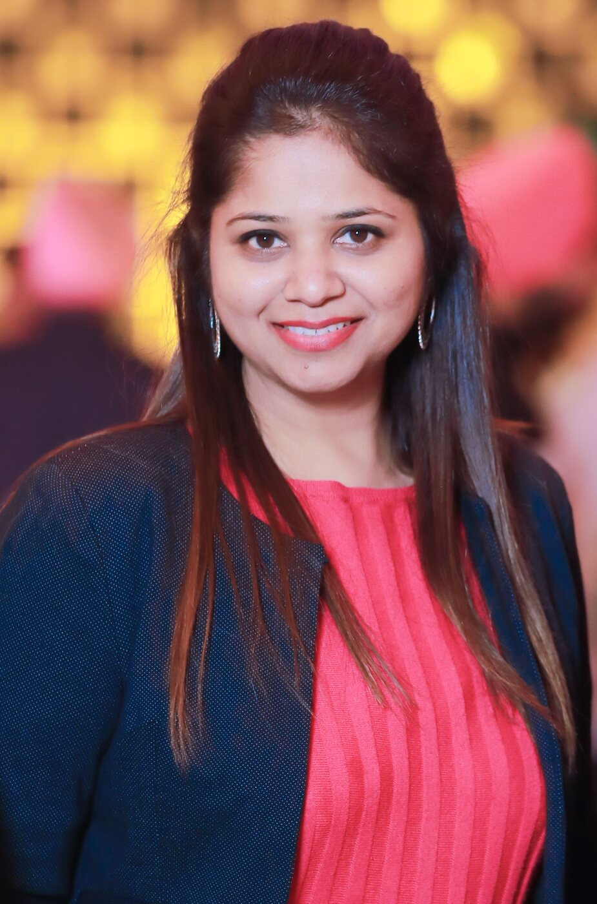

Kanika Bansal · Writer · Director · Producer
Welcome to my world of stories.
I studied architecture. I never went to film school. But filmmaking was always the real love — and after 23+ years behind the camera and in the edit, it's the only thing I want to do.

The journey
2003 — today
-
2003 Where it began
Started out in Mohali with corporate video editing — the years that taught me rhythm, pace and how a cut changes everything.
Every film is made twice: on set, and again in the edit.
-
2012 Weddings join the work
Wedding films added to the corporate work — real emotion, captured without a second take.
-
2019 Love You So Much
One call: "We need a short film — will you do it?" I said yes without thinking. Producer Kanwal Magan believed in me, and my first film was made.
I had no experience. I had a chance. I wasn’t going to let it go.
-
Film 2 Soulmates
Stuck for an idea, I was driving my daughter home from school. One small thing she said clicked — and became the seed of the film.
Sometimes one line is enough to write a whole script.
-
Film 3 Destiny
Soulmates was loved, but I saw its flaws. With Destiny I pushed direction and execution — including long, one-take shots.
For the audience, story matters most. For me, craft matters too.
-
Film 4 Wrong Number
My producer moved back to London. Three films in, I was on my own. I wrote and produced my first web series with my own savings — two of the hardest years of my life. Today it has been acquired by an OTT platform.
This phase taught me more than any other.
-
Film 5 Ek Mulaqaat
One location, three actors, natural light, an 8am-to-6pm shoot — a 15-minute film made for ₹10,000 with a team that believed in it.
Films aren’t made with money. They’re made with people and intention.
-
Film 6 Amar Prem Chaiwala
My first comedy — the actors added their own lines on set, and I laughed while directing.
Don’t write jokes. Write situations.
-
Jan 2024 FilmzwithKanika is born
I took my films to OTT platforms in Mumbai, Delhi and Chandigarh, and heard nothing back. So I built my own platform — and took my films straight to the audience.
I never gave up. That’s the part of me I love most.
-
Film 7 Yehh Ehsaas
I learned screenwriting by playing Jab We Met on half the screen and reading its script line by line on the other. The first film I personally loved.
Scripts aren’t only written. They’re visualised.
-
Jan 2025 21 Ghante
A 51-minute thriller shot in four days in a forest, lit by phones at midnight. It monetised the channel within a month and won Best Short Film at the Nawada International Film Festival 2025.
Limitation doesn’t matter. Creativity does.
-
Film 9 Ek Sukoon
A two-day shoot planned with a family holiday. Singer Sahil Sargam gave us a song and said, "Pay me when you make your big film."
Create honestly, and people feel it.
-
Film 10 The Reunion
A vertical thriller series with 13 artists — written in 10 days, shot over three nights, ready in a month. My fastest project yet.
Every format is a new way to tell a story.
-
2026 AI films & the next chapter
AI music videos, product ads and hybrid films — and a new film I’m sharing in real time on Instagram, from script to screen.
Let’s create something beautiful — together.
What ten films taught me
Filmmaking isn't made by gear. It's made by clarity and story.
Audiences don't care whether you shot on a cinema camera or a phone. They care whether the story holds them.
After every shoot I ask myself why I do this. And every time, the next idea arrives anyway.
Actors, DOPs, singers who believed before there was a budget. Every film here is a team's film.
Don't wait for the perfect time. I didn't — and I never gave up.